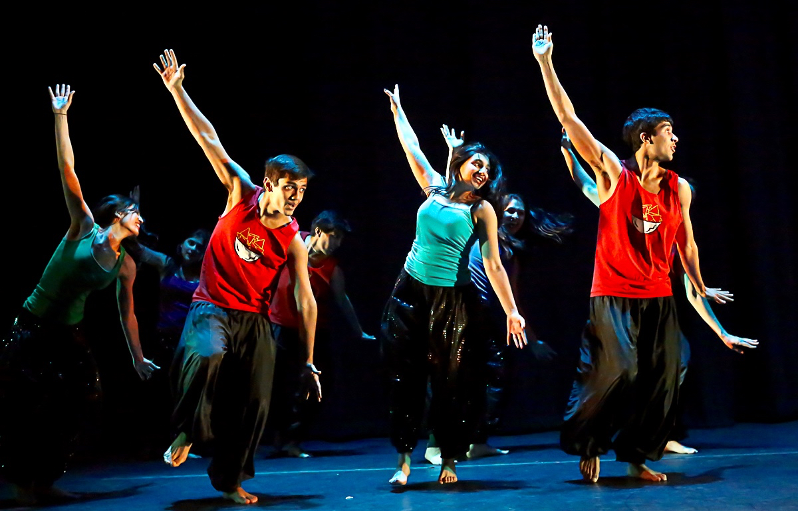

What is Naacho?
Naacho is Princeton's Premier South Asian dance company. We've learned the art of popping, locking, and dropping with a dash of South Asian spice. Naacho prides itself on presenting a wide variety of traditional and contemporary South Asian dance styles including Bollywood, classical, folk, hip hop, fusion, and more!
Founded in 2002, Naacho aims to promote the beauty of South Asian dance all while combining the vast range of languages, costumes and cultures of the region into our performances. In addition to our annual performance that is showcased to the wider Princeton community every February, Naacho also participates in many guest events such as Reunions, International Day, TigerNight and This Side of Princeton.
Naacho is very proud to have a diverse company of over 30 passionate dancers, and brings together dancers with no previous experience as well as those who are trained in traditional South Asian dance styles. Our dancers come from all corners of the world -- from South Asia to Australia and everywhere in between!
Above all, Naacho prides itself as more than a dance company -- we are a family. Through Naacho, many of us have found a support group, built life-long friendships and found a place on campus we can happily call home. Last, but not least, we also have a ridiculous amount of fun!